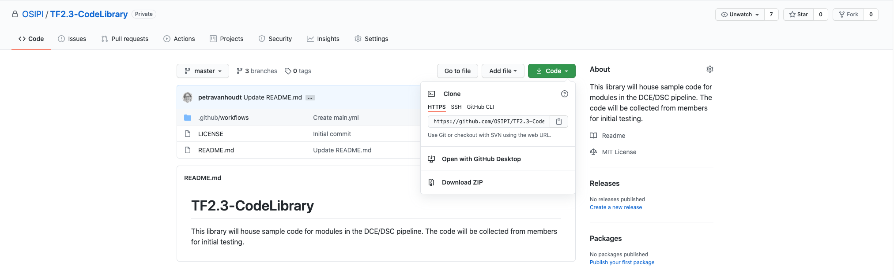

Create a copy of the respository and contribute changes
Contents
Create a copy of the respository and contribute changes¶
Note: The guidelines and instructions presented in this document use examples evaluated on the macOS operating system. Where applicable, links referencing documentation to perform the same task on a different operating system has been provided. Please note that these links may not be exhaustive and we welcome users to report any issues they face while working through the steps outlined, on the issue tracker for the repository.
Setup a local copy of the repository¶
To create a local copy of the repository, navigate to the respository located at OSIPI DCE/DSC Code Library, and use the repository url from the CODE drop down menu (shown in the figure below). 
On the local computer, open the terminal application and navigate to the folder where you would like the repository to be located. git clone is then used to clone a local copy of the repository..
$git clone https://github.com/OSIPI/DCE-DSC-MRI_CodeCollection.git
Now you will have a local copy wherein any additions, modifications or deletions made would remain local to your computer and not immediately affect the repository housed on GitHub. To obtain information about the repository enter
$git status
The output will look something similar to

Working with a specific branch of the repository¶
The master branch of the repository is checked out initially by default. To switch to a specific branch - let’s say the branch name is OsipiTaskForce, use git checkout as follows.
$git checkout -b OsipiTaskForce
Branching in Git is a powerful tool when working on new or developmental features of a project. Specific to Task Force 2.3, each milestone / deliverable will have a unique branch named Milestone-X / Deliverable-X.
While working on a new feature for a particular milestone/deliverable, it is encouraged to check out a new branch during its development and generate a pull request on GitHub. This will enable the feature branch (compare) to be merged into Milestone-X / Deliverable-X (base).
Submitting local changes to the remote repository¶
New files created within the local version of the repository will show up as untracked files unless explicitly added to the repository.
$git add new_file_in_repository
The changes made to the tracked files are then commited to the local repository before being pushed to the remote repository on GitHub.
$git commit -m "Commit message"
git commit commits changes made to all tracked files. At this point, these changes are still only reflected on the checked out branch of the local repository. For these changes to be reflected on the remote repository on GitHub, the local changes have to be pused. If performing git push for the first time on a new branch, the upstream connection has to be established with the remote location by the following command
$git push --set-upstream origin OsipiTaskForce
where OsipiTaskForce is the new branch as specified in the earlier examples. If the upstream connection has already been established then a simple
$git push
command is sufficient for the local changes ot be reflected on the remote repository.